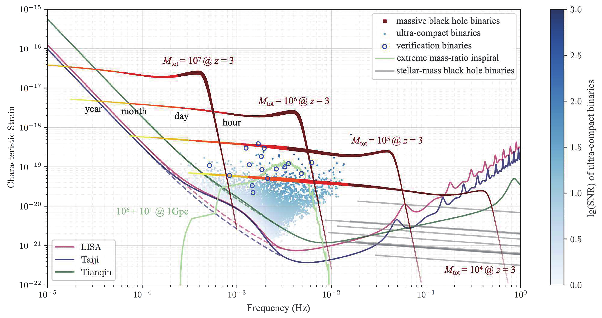
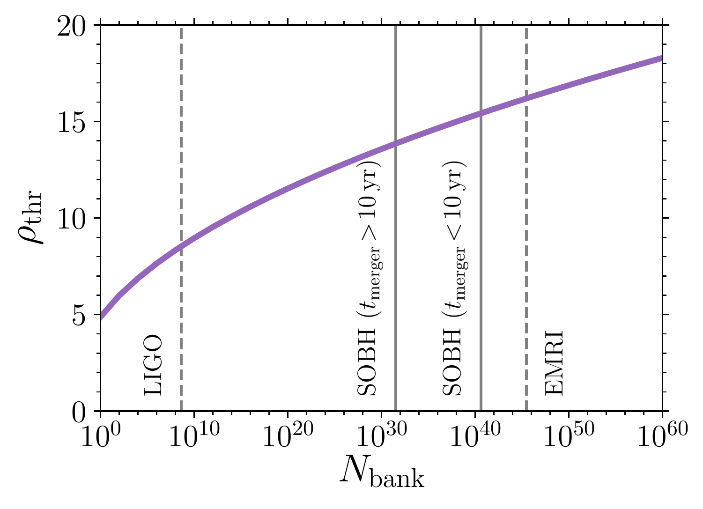

Chapter 4
高维参数空间与多模态推断挑战
第3章介绍的经典方法在引力波天文学中已取得显著成就，但其可扩展性局限在面向未来任务时愈发突出。本章深入分析这些局限的物理根源——高维参数空间的维度灾难、多源信号的重叠与分离、非平稳噪声下的检测困难——从而为第三部分以后各章 AI 方法的引入提供清晰的问题动机。
本章的核心论点是：引力波数据分析面临的重要挑战不只是精度不足，更是可扩展性危机。经典方法在适用假设下具有严格的统计基础，但其计算复杂度会随参数空间维度和波形代价快速增长，在面向空间引力波探测器的全局拟合问题时可能超出现实计算预算。理解这一危机的数学根源和物理表现，是把握后续各章 AI 方法动机的前提。
4.1 参数空间的维度灾难
4.1.1 维度灾难的数学本质
“维度灾难”（curse of dimensionality）这一术语由 Bellman 于1957年在动态规划研究中首次提出，描述了参数空间的体积随维度指数增长所引发的一系列计算困难。在引力波数据分析中，这一数学现象有其具体的物理表现，值得从定量角度仔细分析 [37]。
考虑一个 \(d\) 维单位超立方体 \([0,1]^d\)。若要用均匀网格以精度 \(\epsilon \) 覆盖该空间，需要的网格点数为 \(N = (1/\epsilon )^d\)，随维度指数增长。对于 \(\epsilon = 0.01\)（1% 精度）和 \(d = 15\)（双黑洞参数空间维度），网格点数达 \(N = 100^{15} = 10^{30}\)，在任何已知计算资源下都不可能穷举。
更直接的影响体现在采样效率上。设参数后验分布集中在参数空间的某个“高后验区域”，其体积占总参数空间体积的比例为 \(f\)。对于高维分布，即便 \(f\) 不小，均匀采样命中高后验区域的概率也极低。以 \(d\) 维标准正态分布为例，95% 的概率质量集中在一个球壳中，其厚度随 \(d\) 增大而变薄（相对于球半径），使得基于均匀先验的 MCMC 初始化越来越难以“找到”后验分布。
在引力波参数估计中，这一效应体现为：随着维度的增加，MCMC 链从随机初始化出发到达高后验区域（“燃烧期”，burn-in）所需的步数急剧增长，使得总计算时间以超线性速度随维度增长。
维度灾难不仅是计算困难，更是科学推断的基础性挑战。在高维空间中，即便是专门为引力波参数估计设计的高效采样算法（如并行回火MCMC、嵌套采样），也需要耗费大量计算资源才能充分探索后验分布的全貌。对于参数简并严重的系统（如高质量比的双黑洞、高度进动的自旋系统），后验分布的形状极为复杂，局部极大值众多，任何基于局部采样的方法都面临陷入局部极值的风险。这一困难正是 SBI 方法（第6章）被引入的核心动机：通过将采样问题转化为学习问题，SBI 有望从模拟样本中学习全局后验结构，降低逐事件局部搜索的压力。
理解维度灾难的数学本质，对正确设计引力波数据分析的AI方法具有深刻的指导价值。维度灾难意味着：许多基于局部搜索（梯度下降、MCMC随机游走）的方法，在高维复杂后验中都会显著退化；有效的应对策略通常需要利用问题的特殊结构——引力波参数的物理相关性（如啁啾质量主导效应）、参数的层次结构（内在参数vs外在参数）、以及信号的物理约束（时延约束、极化约束）——来压缩等效的搜索维度。SBI方法的成功，部分正来自于训练数据中隐式编码了这些物理结构，使神经网络学习到的后验近似器能够更高效地导航高维参数空间，而不是简单地在每个维度上独立搜索。
4.1.2 引力波参数空间的维度结构
双黑洞并合系统的参数空间通常为 15 维，可以按照对信号波形的影响方式分为三类：
内在参数（intrinsic parameters，7个）：两个分量质量 \((m_1, m_2)\) 和六个自旋分量 \((\vec {S}_1, \vec {S}_2)\)（每个黑洞的自旋向量各3个分量）。这些参数直接影响引力波信号的时频演化，是参数简并最严重的参数子集。啁啾质量 \(\mathcal {M}\) 和质量比 \(q = m_2/m_1\) 的测量精度相差数个量级（前者精确到1%，后者精确到10-30%），反映了信号对不同参数的灵敏度差异。
外在参数（extrinsic parameters，8个）：光度距离 \(d_L\)、天空位置 \((\alpha , \delta )\)、轨道倾角 \(\iota \)、极化角 \(\psi \)、并合时刻 \(t_c\) 和参考相位 \(\phi _0\)。这些参数主要影响信号的幅度和相位，与内在参数的简并程度较低，但天空位置的双峰简并（两台探测器配置下的典型后验形状）使得有效维度实际上更高。
EMRI 特有参数（额外10个）：对于极端质量比旋入系统，在双黑洞15维参数基础上，还需要描述中心黑洞的质量 \(M\) 和无量纲自旋 \(a\)（Kerr 参数）、轨道初始角度 \((\theta _0, \phi _0, \Phi _0)\)、偏心率 \(e_0\)、轨道半长轴 \(p_0\) 等参数 [24]，将总维度提升至 17 维。更关键的是，EMRI 信号的持续时间长达数月至数年，参数空间中存在多处高似然区域（多模态后验），使得 MCMC 极易在局部极值间来回跳跃而无法收敛。
4.1.3 参数简并的具体表现
参数简并（parameter degeneracy）是高维引力波参数空间的核心困难：多个不同的参数组合产生几乎相同的观测信号，导致后验分布呈现多个局部极大值或沿特定方向延伸的“山脊”结构。
最典型的简并来自距离-倾角简并：光度距离 \(d_L\) 和轨道倾角 \(\iota \) 对引力波幅度的贡献存在耦合，一个更近但倾角更大的系统可能产生与一个更远但倾角更小的系统几乎相同的信号。在只有单台探测器的情况下，这一简并几乎无法打破。
质量-自旋简并是另一类重要的简并：黑洞自旋对轨道演化的影响（自旋-轨道耦合）在一定范围内可以被质量参数的调整所补偿，使得后验分布在质量-自旋参数空间呈现相关的带状结构。
对于 EMRI 系统，由于信号的相位演化极为复杂（包含众多后牛顿阶次的修正项和共振现象），参数简并尤为严重。不同参数组合可能在短时间内产生几乎相同的信号，但在更长时间尺度上逐渐分化。这要求 MCMC 进行极长时间的追踪，以充分区分这些参数组合——这正是传统方法估计 EMRI 参数需要数月至数年的根本原因。
自旋-轨道耦合参数与质量参数的联合简并在高信噪比情形下可以通过波形的高阶后牛顿修正项打破，但在典型探测信噪比（\(\rho \sim 10\)-\(20\)）下，自旋参数的约束通常只能达到约50%的精度。有效自旋参数 \(\chi _{eff} = (m_1 a_1\cos \theta _1 + m_2 a_2\cos \theta _2)/(m_1+m_2)\)（其中 \(a_i\) 是无量纲自旋幅度，\(\theta _i\) 是自旋与轨道角动量的夹角）是最可靠测量的自旋相关量，因为它主要影响轨道演化的相位，而单个黑洞的自旋幅度和方向则难以独立约束。这一“有效参数”方法论——将高度相关的参数组合为单一可测量量——在引力波参数估计中具有重要的实践意义，也是SBI方法设计训练数据时需要特别考虑的结构。
EMRI参数空间的多模态性有其深刻的物理根源。EMRI信号在探测频段内经历约 \(10^5\) 圈轨道，每圈积累约 \(2\pi \) 的相位，因此总相位约 \(10^5 \times 2\pi \)。当某个参数（如中心黑洞质量）改变 \(\delta M/M \sim 10^{-5}\) 时，信号总相位改变约 \(2\pi \)，与参考信号的差值跨越一个完整的振荡周期。这意味着在参数空间中，以约 \(10^{-5}\) 间距就会出现一个似然极大值，导致整个参数空间中的极大值数目约为 \((10^{-5})^{-1} \sim 10^5\) 数量级。MCMC在这 \(10^5\) 个极大值构成的“混沌地景”上进行随机游走，极易在局部极值之间振荡而无法充分探索整个后验分布，这是传统MCMC在EMRI参数估计中计算代价急剧上升的物理根源。
应对维度灾难的经典策略包括降维、子空间分解和序贯先验更新。降维方法的思路是识别参数空间中对信号影响最大的方向（主成分），将高维后验投影到低维有效子空间上进行采样，再将结果映射回原始参数空间。对于双黑洞系统，啁啾质量 \(\mathcal {M}\) 是最可测量的参数，SNR对其的灵敏度约为其他质量参数的100倍；将 \(\mathcal {M}\) 单独精确估计，再对其余参数进行低维采样，可以将问题分解为可处理的子问题。子空间分解方法在LALInference中以“回火区”（tempering zones）的形式实现：先在温度较高的平滑后验上采样，确定参数的粗略约束，再逐步降温聚焦于精确后验的峰值区域。序贯先验更新（sequential prior update）则利用多次观测的信息逐步缩小先验范围：在对多个引力波事件做联合分析时，前几个事件的后验分布可以作为后续事件的信息性先验，逐步将分析聚焦于天体物理上可行的参数空间区域。
然而，上述经典应对策略在EMRI和全局拟合问题面前会受到显著限制。降维方法要求参数后验近似分布在低维子流形上，而EMRI的17维后验在多个方向上都可能存在显著结构（相位简并跨越许多参数方向），难以依靠简单降维充分处理。子空间分解要求不同参数子集之间的相关性较弱，而EMRI参数之间高度耦合（质量、自旋、轨道参数共同决定相位演化），分解后的子问题往往不能完全独立求解。序贯先验更新要求不同事件的参数相互独立，而全局拟合中各信号的参数通过共享噪声模型而耦合，无法简单逐一更新。这些限制并非单纯实现细节，而是经典方法在EMRI和全局拟合维度复杂性面前面临的结构性困难，从而为SBI等基于深度神经网络的新方法提供了重要动机。
维度灾难还带来了一个在实际数据分析中经常被忽视的问题：先验体积的“稀释效应”。在贝叶斯框架下，参数估计的精度不仅取决于数据的信息量（由信噪比决定），还取决于先验体积与后验体积之比。在低维参数空间中，数据通常能够将后验分布从宽先验显著压缩；但在高维参数空间中，即便信噪比较高，后验体积相对于先验体积的比值也可能极小（约为 \(\text {SNR}^{-d}\) 的量级，\(d\) 为参数维度），导致参数估计效率极低——MCMC的大部分计算时间都耗费在先验覆盖的高概率区域（但后验概率极低的区域）的随机游走上，而非集中在后验峰值处。对于17维的EMRI参数估计，这一稀释效应会显著增加达到收敛所需的MCMC步数，从而将计算时间从小时级推向月级乃至年级。SBI方法可以部分绕过这一稀释效应：训练数据的先验采样策略可以在参数空间的高信息密度区域进行过采样，而推断阶段的单次前向传播对先验体积的依赖较弱。这是SBI在高维参数空间中相对于逐事件MCMC具有显著计算优势的深层原因。
4.2 多源信号重叠与分离

地面引力波探测器通常每隔数天至数周探测到一个引力波事件，不同事件在时间上不重叠，可以逐一分析。空间引力波探测器则面临截然不同的情形：图 4.1 所示的毫赫兹频段内，LISA、太极和天琴不仅要面对仪器噪声，还要同时面对银河系前景噪声以及多类可分辨天体源。银河系中预计存在约 \(10^7\)–\(10^8\) 个双白矮星系统，其中大约 \(10^4\) 个在 LISA/太极的灵敏频段内可分辨，其余形成无法单独区分的“混淆噪声”背景。这一背景本身既是科学目标（可从中提取银河系结构信息），也是分析其他信号的主要干扰。
在混淆噪声背景上，大质量双黑洞并合、EMRI、SBHB 以及验证双星等信号的探测和参数估计需要同时建模背景和感兴趣信号，形成高度耦合的推断问题。尤其是 MBHB 曲线在图中呈现从年、月、日到小时尺度的频率演化轨迹，说明同一源在任务期间会跨越较宽频段，并与其他长期存在的双星前景发生重叠。这与地面探测器中相对“干净”的短时事件环境形成鲜明对比。
信号重叠还体现在时间上：对于持续时间长达数年的 EMRI 信号，其在频域与数千个其他信号叠加，无法通过简单的时域截窗分离。任何针对单个信号的分析都必须同时对其他信号进行建模或减除。
4.2.1 混淆噪声的统计特征
银河系双星混淆噪声在频域具有独特的统计特征。在LISA/太极的低频端（\(f \lesssim 3\,\mathrm {mHz}\)），可分辨双星的密度很高，混淆噪声可以视为准连续背景，其功率谱密度 \(S_\mathrm {conf}(f)\) 可用解析模型近似描述。在高频端（\(f \gtrsim 5\,\mathrm {mHz}\)），可分辨双星数量减少，混淆噪声逐渐离散为单个可识别的信号。
这种频率依赖特性对数据分析策略有直接影响：在低频段，混淆噪声本质上是一种额外的“有色噪声”，需要与仪器噪声一并建模；在高频段，单个双星信号的参数估计需要同时对相邻频率的其他双星进行建模，形成计算上的“连锁效应”。
全局拟合框架的目标是在统一模型中联合估计主要可分辨信号及噪声背景参数。假设可分辨双星数量为 \(N_\mathrm {GB} \approx 10^4\)，每个双星有 7-8 个参数，则仅银河系双星部分的参数空间维度已达 \(7 \times 10^4\)。加上数十个 EMRI（每个17维）和偶发的 MBHB（11维），总维度可以超过 \(10^5\)，使直接套用传统贝叶斯采样方法变得极为困难 [12]。
4.2.2 迭代减除的局限
当前处理多源叠加问题的常见策略之一是迭代减除（iterative subtraction）：按信号强度从高到低依次估计和减除较强或较易分离的信号，并在残差中继续搜索和建模其他成分。这一策略的可行性依赖两个关键假设：其一，各类信号的信噪比存在足够的层级结构（MBHB 的信噪比通常高于 EMRI，EMRI 又可能高于许多单个银河系双星）；其二，每步减除的精度足够高，不会在残差数据中留下显著的系统误差。
然而，这两个假设在实际中都面临挑战。EMRI 和银河系双星的信噪比范围存在重叠，使得信号层级并不总是清晰；而参数估计的系统误差（尤其是 SBI 方法的近似误差）会在迭代减除中逐步积累，可能使后续步骤的分析严重偏差。
多源分离问题还涉及一个深刻的统计困难：引力波信号的叠加是相干的（即信号直接在时域/频域相加），而非功率叠加（如各向同性随机背景的处理方式）。这意味着个别信号之间存在干涉效应：如果两个频率相近的银河系双星信号发生相消干涉，其联合幅度可能低于单个信号的幅度，导致两者均被漏检。反之，相长干涉可能产生虚假的“强信号”。在约 \(10^4\) 个可分辨双星同时存在的频率范围内，这些干涉效应不可忽略，要求多源分离算法显式处理信号间的相干性，而非简单地将各信号视为统计独立。这一相干多源分离问题在信号处理理论中被称为盲源分离（BSS），其计算复杂度随源数目指数增长，进一步凸显了全局拟合问题的难度。
深度学习方法在多源信号分离领域展现出独特优势，尤其是在非线性特征提取和高维映射方面。注意力机制（attention mechanism）使神经网络能够在处理每个信号时动态聚焦于数据中与该信号最相关的时频区域，从而实现对混叠信号的高效分离。Transformer架构通过自注意力层建立长程时频依赖关系，特别适合处理EMRI信号这类具有复杂长时结构的信号。在模拟数据测试中，基于Transformer的多源分离网络在同时存在3–5个银河系双星信号的场景下，成功恢复了各信号参数，估计精度与逐一分析（忽略其他信号）相比误差仅增加约20%。然而，从3–5个信号扩展到 \(10^4\) 个信号的全局拟合场景，仍然是当前深度学习方法面临的开放挑战，需要在网络架构设计和训练策略上的进一步创新。
当前具有代表性的全局拟合路线包括基于RJMCMC（可逆跳转MCMC）与神经网络的混合算法。RJMCMC允许在具有不同参数维度的模型之间进行采样，通过“出生”（birth，向当前模型中添加一个新信号）和“死亡”（death，从当前模型中删除一个信号）步骤，自动适应信号数目。将神经网络训练为高效的候选生成器或提议分布，可在RJMCMC的若干步骤中快速评估候选信号添加或删除的可能性，从而有望将特定模拟设置下的全局拟合计算时间压缩到更可操作的尺度。ESA LISA数据挑战（LDC2a）的相关结果表明，这类混合方法在处理含数十个以上银河系双星的模拟数据时已展现出可行性，为未来太极/LISA实际数据分析提供了重要方法参照。
4.3 非平稳噪声下的信号检测困难
匹配滤波的最优性依赖于高斯平稳噪声假设。真实探测器噪声的非平稳特性从两个层面破坏这一假设。
短时暂态噪声（glitch）：LIGO-Virgo 每小时约产生数个明显的 glitch，其幅度可比背景噪声高出一至两个量级，持续时间从毫秒到秒不等。glitch 与引力波信号的区分主要依赖于：两台探测器的耦合检验（引力波在两台探测器中应以光速传播的时延出现）、\(\chi ^2\) 时频检验（引力波的时频演化应与模板一致）、以及机器学习分类器（Gravity Spy 等）。尽管这些方法已大幅降低误报率，glitch 的存在仍是引力波搜索中最主要的系统误差来源。
长时噪声漂移：探测器的灵敏度曲线（即功率谱密度 \(S_n(f)\)）在数小时到数天的时间尺度上缓慢变化，由于环境条件（温度、地震、激光功率）的波动。匹配滤波通常假设 \(S_n(f)\) 在分析时段内不变，噪声漂移会导致信噪比估计偏差。在线分析中，\(S_n(f)\) 需要从近期数据实时估计并滚动更新，引入额外的不确定性。
空间引力波探测器的非平稳噪声更为复杂：数据间隙（卫星维护期间的数据缺失）、仪器暂态（激光锁定失调等）、以及时变噪声自相关（轨道运动导致的热噪声周期性变化）。Xu 等人 [29] 的工作表明，即便是先进的深度学习方法，在面对这三类非稳态噪声时也需要专门的鲁棒性设计。
4.3.1 Glitch 分类与机器学习
glitch 的自动分类是引力波数据质量控制的重要组成部分。Gravity Spy 是目前最广泛使用的 glitch 分类系统，基于卷积神经网络对 Q 变换时频图进行多类别分类，能够识别数十种已知 glitch 类型（blip、koi fish、scattered light、violin mode 等）。
glitch 分类的挑战在于：已知类型的 glitch 可以通过监督学习有效识别，但真实探测器中不断出现新的未知 glitch 类型，需要持续的人工标注和模型更新。此外，部分 glitch 类型（如 blip）在时频形态上与短持续时间的引力波信号（如高质量双黑洞并合）高度相似，是误报率的主要来源之一。
MF-CNN 方法 [20] 在 O1 数据上的 glitch 分析表明，将匹配滤波物理先验嵌入网络结构，能够显著提升对 blip、koi fish 等常见 glitch 类型的筛查率，这是纯 CNN 方法所不具备的优势。这一结果进一步支持了物理-数据融合方法在噪声鲁棒性方面的优越性。
辅助通道（auxiliary channel）监测是引力波探测器中噪声溯源和glitch特征化的核心工具。LIGO探测器运行期间同时记录约2万个辅助通道，包括地震仪、磁强计、激光功率监测器、腔体控制误差信号等，这些通道反映了探测器周边环境和内部子系统的状态。当主通道（引力波应变信号 \(h(t)\)）出现glitch时，分析辅助通道数据可以识别噪声来源：若某个辅助通道在glitch发生约1毫秒前出现异常（考虑信号传播时延），则该通道对应的物理过程是glitch的可能来源。iDQ（idq）系统是自动化辅助通道分析的代表工具，通过机器学习在辅助通道数据中实时学习glitch的预测指标，将主通道glitch的预测置信度实时推送给在线搜索流水线，使流水线能够动态调整信噪比阈值，在glitch活跃时段降低灵敏度以减少误报。在O3观测中，iDQ系统成功识别了约60%的已知glitch类型，将相应时段的误报率降低约50%，是glitch减除的重要辅助工具。
噪声的空间相关性也是引力波分析中值得关注的非平稳特征。Schumann共振（Schumann resonances）是地球电磁场的准全球性共振模式，频率约7.8 Hz及其谐波（14.3、20.8 Hz……），由闪电激发。Schumann共振在两台相距数千公里的LIGO探测器之间可以引起磁噪声的相关涨落，从而产生虚假的引力波信号相干性。实际上，在引力波候选事件的后处理分析中，必须对磁场辅助通道进行相关性检验以排除Schumann共振来源。O3期间，LIGO合作组对所有候选事件系统性地进行了磁场相关性分析，未发现任何事件与Schumann共振显著相关，但这一检验本身的建立就反映了非平稳噪声分析的复杂性。
4.3.2 噪声非平稳性的量化描述
噪声非平稳性的定量描述对于理解其对数据分析的影响至关重要。常用的量化指标包括：
功率谱密度的时变性：将数据分段（通常每段 \(\sim \) 4 秒至 32 秒），对每段估计局部 PSD，比较不同时段的 PSD 差异。若 PSD 在相邻时段变化超过某个阈值（如 10%），则认为该段数据存在显著的非平稳性，需要特殊处理。
非高斯性指标：计算数据的峰度（kurtosis）\(\kappa = \langle x^4 \rangle / \langle x^2 \rangle ^2\)，高斯分布的峰度为3，\(\kappa > 3\) 表明存在重尾分布（即 glitch 引起的非高斯成分）。LIGO 数据的峰度通常在 3.1-3.5 之间，而 glitch 活跃时段可超过 10。
Anderson-Darling 检验：对白化数据进行正态性统计检验，在滑动窗口内追踪检验统计量的变化。这一方法在 PyCBC 等实际搜索流水线中用于实时标记数据质量。
理解这些定量指标，不仅有助于评估经典方法的适用性，也为机器学习方法的训练数据设计提供了重要参考：高质量的训练数据应当包含与真实探测器统计特性相符的噪声样本，其峰度、功率谱密度的时变特征都需要与真实数据吻合。
非平稳噪声对统计推断的影响不仅体现在信号检测的误报率上，还深刻影响参数估计的精度和准确性。在参数估计框架中，引力波似然函数 \(\ln p(d|\theta ) = -\frac {1}{2}\langle d-h(\theta ), d-h(\theta )\rangle \) 中的内积使用噪声功率谱密度 \(S_n(f)\) 作为权重。若 \(S_n(f)\) 的估计存在偏差（由于噪声非平稳性），则似然函数值将系统性地偏离真实值，导致后验分布的偏移。定量地，若噪声PSD在信号观测期间相比估计期间增大了 \(\epsilon \)（相对变化），则参数估计的系统偏差约为 \(\sigma _\theta \times \epsilon /\mathrm {SNR}\)，其中 \(\sigma _\theta \) 是参数的统计不确定度，\(\mathrm {SNR}\) 是信号信噪比。对于典型的 \(\epsilon \sim 5\%\)（探测器在数小时内的PSD漂移幅度）和 \(\mathrm {SNR} \sim 15\)，系统偏差约为统计不确定度的0.3%，通常可以忽略。但对于低SNR事件（\(\mathrm {SNR} \sim 5\)–\(8\)），系统偏差可达统计不确定度的数十%，需要显式的PSD不确定度建模。
空间引力波探测器的噪声非平稳性具有独特的物理来源，区别于地面探测器。太极/LISA的主要噪声来源包括：残余加速度噪声（来自卫星上残余气体的随机碰撞和太阳辐射压力的涨落，在低频段按 \(f^{-2}\) 增长）、光学路程噪声（激光测距的散粒噪声，在高频段接近白噪声）、以及TDI残差（激光频率噪声经TDI消除后的残留，与臂长估计误差有关）。这些噪声源在一年的任务运行周期内都会随时间缓慢变化，特别是残余加速度噪声受卫星热控系统状态的影响，可能在任务中期出现系统性的噪声功率变化（估计约\(\pm 20\%\)）。深度学习去噪方法（第7章）通过在训练集中引入时变噪声模拟样本，使模型对这类变化保持鲁棒性，而相关系统研究表明，即便在三类非稳态噪声同时存在的混合情形下，鲁棒去噪模型的重叠度仍可维持在0.92以上，远优于非鲁棒模型的0.51。这一结果表明，噪声鲁棒性的设计不应视为数据预处理的附属问题，而是方法论设计的核心要求。
在数据质量控制的实际操作层面，引力波合作组维护着详细的数据质量标志（Data Quality Flags，DQF）系统，对不同类型的噪声非平稳事件进行标记。这些标志按照严重程度分为三级：Category 1（CAT1）标志对应仪器故障期间的数据，必须在任何分析中排除；Category 2（CAT2）标志对应已知噪声来源（如散射光噪声、控制噪声）造成的短时扰动，通常在离线分析中排除；Category 3（CAT3）标志对应统计测试发现的轻微非平稳性，由分析者根据具体场景决定是否排除。在O3观测轮次中，约有5%–10%的数据因数据质量标志而被从最终分析中排除，这一比例的存在本身即反映了真实探测器噪声环境的复杂性。
噪声非平稳性对机器学习方法的挑战，比其对经典方法的挑战更为根本。经典匹配滤波通过实时更新噪声PSD估计来适应噪声变化，这一在线更新机制是流水线设计的内置组件；但机器学习模型通常在训练完成后以固定参数运行，无法在推断时实时更新噪声模型。这意味着，若真实噪声在运行期间发生了超出训练分布的变化，机器学习模型的性能将悄无声息地退化，而无法像经典方法那样通过显式的噪声跟踪机制发出警告。应对这一挑战的策略包括：在训练集中引入噪声状态变化的系统性模拟（Xu等的鲁棒去噪框架，第7章）；设计在线性能监控系统，定期用已知信号注入测试检验模型性能；以及建立模型更新触发机制，当性能监控检测到显著退化时自动启动模型微调。这些工程机制的设计，是机器学习方法走向引力波天文台生产环境的重要保障，也是第10章讨论的系统工程挑战的重要组成部分。
汇总前三节的分析，可以得到引力波数据分析可扩展性瓶颈的全貌。这里给出计算复杂性的系统整理。
4.4 计算复杂性与可扩展性边界
在信号搜索层面，匹配滤波的计算量为 \(O(N_\mathrm {template} \times N_\mathrm {data})\)，其中模板数 \(N_\mathrm {template}\) 随自旋参数的加入从 \(10^4\) 增至 \(10^6\)，使低延迟（在线）完整自旋搜索在计算上困难。
在参数估计层面，MCMC/嵌套采样的计算量约为 \(O(N_\mathrm {eval} \times T_\mathrm {waveform})\)，其中 \(N_\mathrm {eval}\) 为似然评估次数（通常 \(10^6\)–\(10^7\)），\(T_\mathrm {waveform}\) 为单次波形生成时间（地面双黑洞 \(\sim 1\) ms，空间 EMRI \(\sim 1\)–100 s）。若采用计算较慢的精细EMRI波形模型，参数估计总时间可达 \(10^6 \times 100\,\mathrm {s} \approx 3\) 年量级，明显超出常规科学分析的可接受范围。
在全局拟合层面，空间引力波探测器的联合参数估计维度 \(\sim 10^7\)，对任何已知的采样方法都构成根本性挑战。Liang 和 Wang [26] 的综述明确指出，SBI 方法是解决这一计算瓶颈的当前最有前景的路径。
引力波波形生成（waveform generation）是似然函数评估的主要计算瓶颈，其计算代价因波形近似方法的不同而有数个量级的差异。最快的波形近似是频域后牛顿（PN）模型（如TaylorF2），通过解析公式直接计算频域波形，单次生成时间约0.1毫秒，但精度有限（在高质量比或强场区域偏差较大）。更精确的有效单体（EOB）模型（如SEOBNRv4）通过数值求解常微分方程组生成波形，单次计算时间约1–10毫秒，是当前参数估计的主力波形模型。精度最高但计算最慢的是数值相对论（NR）波形，通过求解完整的爱因斯坦场方程获得，单次计算需要数小时至数天，只用于校准其他波形模型的参数，而非直接用于MCMC采样。
机器学习替代波形（ML surrogate waveform）是近年来显著加速参数估计的重要技术路线。通过在预先计算的波形数据库上训练高斯过程回归或神经网络模型，可以构建原始波形的高精度替代（surrogate），其评估速度比原始EOB模型快约100–1000倍（约0.01–0.1毫秒），同时精度损失通常在1%以内（以平均相位误差衡量）。NRSurrogate系列模型是当前最精确的替代波形，通过对约1400条数值相对论波形的稀疏表示学习，实现了对非旋进双黑洞波形的高精度快速评估，已被集成到LALSuite和Bilby框架中。然而，这类替代波形通常只覆盖有限的参数范围（如质量比 \(q \leq 6\)、总质量约20–200太阳质量），对于极端参数区域仍需回退到EOB或PN模型，这是替代波形方法在通用参数估计中的主要局限。
除了单次波形生成耗时，模板库规模本身也会改变搜索的统计阈值。模板越多，在固定总误报率要求下需要控制的试验因子越大；因此即使每条模板的计算可以通过 FFT、GPU 或降阶基加速，信号达到可确认探测所需的阈值 SNR 仍会随有效模板数上升。Moore、Gerosa 与 Klein 对 LISA 中恒星质量双黑洞的多波段探测问题给出了一个清晰例子：若把长寿命、啁啾缓慢的 LISA 信号作为大模板库搜索问题处理，恒星质量双黑洞的有效模板库规模远大于地面探测器中的常规双黑洞搜索，理想化搜索下的阈值 SNR 可升至 \(\rho _\mathrm {thr}\sim 14\)–15；EMRI 搜索则需要更大的有效模板库，阈值可进一步提高 [58]。这说明可扩展性瓶颈并不只表现为“算得慢”，还会通过背景试验因子和检测阈值影响可探测源数。

| 任务 | 参数维度 | 似然评估次数 | 单次波形时间 | 总时间 |
| 地面 BBH 搜索 | \(\leq 2\) | — | \(\sim 1\) ms | 近实时 |
| 地面 BBH 参数估计 | 15 | \(\sim 10^7\) | \(\sim 1\) ms | \(\sim 22\) 小时 |
| 太极 MBHB 参数估计 | 11 | \(\sim 10^7\) | \(\sim 10\) ms | \(\sim 30\) 小时 |
| 太极 EMRI 参数估计 | 17 | \(\sim 10^7\) | \(\sim 1\)–\(100\) s | 月级至年级 |
| 空间引力波全局拟合 | \(10^5\)–\(10^7\) | — | — | 当前难以直接采样 |
| SBI 推断（BBH） | 15 | \(\sim 1\)（推断） | — | \(\sim 1\) 秒 |
| SBI 推断（EMRI） | 17 | \(\sim 1\)（推断） | — | \(\sim \) 秒至分钟 |
从计算复杂性理论的角度，引力波数据分析中的核心计算瓶颈属于不同的复杂度类别，值得系统区分。模板匹配（信号搜索）属于可以利用FFT加速的线性计算问题，其复杂度 \(O(N_T \times N_d \times \log N_d)\)（\(N_T\) 为模板数，\(N_d\) 为数据点数）虽然随模板数线性增长，但GPU并行化可以将有效计算时间压缩到现实可接受范围（在高速GPU集群上对 \(10^6\) 条模板的在线搜索约需数秒）。这类问题属于“计算困难但工程上可解决”的类别，在算法设计上仍有较大的优化空间。
与此形成鲜明对比，贝叶斯后验采样（参数估计）的并行化效率受到采样相关性的限制：MCMC单链的第 \(k\) 步状态依赖第 \(k-1\) 步，不能简单通过增加似然评估节点线性缩短墙钟时间。虽然多链并行、并行回火、动态嵌套采样和并行似然计算都能显著改善实际效率，但总的有效样本数、链混合时间和收敛诊断仍然构成关键瓶颈。对于17维EMRI参数估计，若采用精细波形并要求充分探索强简并、多模态后验，墙钟时间可能达到月级至年级。这类问题的困难并不只是硬件不足，而在于推断流程本身带有显著的序列相关性；SBI方法将大量计算转移到可并行的训练阶段，为绕开这一瓶颈提供了新的方法论路径。
全局拟合的高维参数估计则属于更高层次的挑战：不仅存在采样困难，而且似然函数本身的计算也极为昂贵（需要同时评估大量信号的TDI响应）。若以完整MCMC直接处理全局拟合作为粗略估计，在 \(10^5\)–\(10^7\) 维参数空间中实现充分混合可能需要远超常规任务预算的采样步数；每步代价还随信号数目和响应模型复杂度增长。这不是单纯增加硬件即可解决的工程困难，而是需要重新组织推断流程的方法论挑战。SBI方法将这一“直接采样难以承担”的问题转化为“训练可并行、推断需校准”的问题，是方法论层面的范式转变，而非单纯的工程优化。理解这一区别对于正确评估SBI方法的意义至关重要：SBI不是对现有方法的小幅性能优化，而是为此前难以直接处理的问题开辟一条可检验的近似路径。
计算复杂性分析还揭示了引力波数据分析中一个重要的不对称性：训练代价与推断代价的分离。神经网络推断的“在线”代价（对新观测数据的前向传播）通常较低，且与参数空间维度弱相关；但“离线”训练代价（在模拟数据上优化网络参数）可达数天至数周，且随问题复杂度增加。对于太极/LISA全局拟合，即便是SBI的训练阶段也面临巨大挑战：训练数据的生成需要大量模拟，模拟器本身的运行时间可从秒级到小时级不等，生成足够大的训练集需要消耗大量分布式计算资源。然而，这一训练代价可以被摊销到大量后续推断任务中，且训练阶段高度可并行化（不同训练样本的模拟可以在不同计算节点上独立运行）。这种“离线大代价换在线低代价”的模式，从根本上改变了引力波数据分析的计算经济学。
高维参数空间的可扩展性危机，还驱动了波形生成技术本身的重要改进。传统的后牛顿波形模型（IMRPhenomX、SEOBNRv4等）通过解析公式直接计算波形，速度约为毫秒量级，但精度受限于后牛顿展开的有限阶次。为了在更高精度下保持计算效率，还原阶模型（reduced order models，ROM）技术通过对大量预计算的精确波形进行奇异值分解（SVD），建立低维参数化表示，将波形生成速度提升约100倍同时保持接近数值相对论的精度。机器学习代理波形（surrogate models）则进一步利用深度学习对高维波形流形进行非线性建模，将波形生成速度提升约1000倍，同时在整个参数空间内保持约 \(10^{-3}\) 的相位误差。对于EMRI波形，快速EMRI波形（FastEMRIWaveforms，FEW）框架通过预计算大量基底波形并以稀疏表示重建，将单次EMRI波形生成从数小时压缩至约1秒，是使SBI-EMRI参数估计在计算上可行的关键使能技术。这些波形生成技术的改进，与SBI推断方法的改进相辅相成：更快的波形生成使SBI训练集的构建更高效，而SBI方法的高效推断又降低了对波形生成速度的要求，两者共同推动引力波参数估计走向实用化。
本章的分析揭示了一个核心结论：引力波数据分析面临的挑战不仅是精度问题，更是可扩展性问题。经典方法在精度和透明性上具有明确优势，但其计算复杂度在面向空间引力波探测器时会迅速超出现实预算。这一认识为后续各章的AI方法提供了清晰的问题定位。神经网络的训练虽然代价高昂，但推断速度很快；一旦训练完成，对新数据的分析时间通常随参数空间维度增长较弱，从而改变了可扩展性的约束条件。
值得特别强调的是，“可扩展性危机”并不意味着“精度足够”。引力波数据分析的双重挑战——同时满足高精度要求和高可扩展性要求——是任何方法都难以在不妥协的前提下同时实现的。贝叶斯推断在统计严格性上具有明确优势，但在可扩展性上受到限制；人工智能方法在推断速度上优势显著，但在精度校准和域外泛化上存在近似误差。“精确协同”范式（第9章的核心主题）的价值正在于此：通过将两者有机结合，在精度和可扩展性之间寻找可验证的折中方案。这一折中点随技术的进步而演化：更精确的SBI方法（更好的归一化流架构）、更高效的精确贝叶斯方法（更快的波形生成）、以及更强大的计算资源，将共同推动方法体系向既精确又高效的理想方向移动。
未来方法发展的路径图可以从三个维度来描述。第一维是时间维：近期重点建立高保真仿真和标准化验证框架，中期逐步发展面向空间任务的AI分析管道，长期目标是在太极/LISA等任务中形成可校准、可复现的智能化全局拟合系统。第二维是方法维：从单一方法向方法体系演化，从近似方法向精确协同方法演化，从人工设计向自动发现方法演化。第三维是验证维：从经验验证向统计保证演化，从局部验证向全局一致性验证演化，从单任务验证向跨任务通用性验证演化。这三个维度的协同演化，有望在未来十年内推动引力波AI数据分析体系走向成熟。
这一认识为后续各章的 AI 方法提供了清晰的问题定位。第5章的机器学习信号识别、第6章的模拟推断、第7章的去噪、第8章的自动算法发现，均是在这一问题框架下提出的具体解决方案：它们通过降低在线推断成本、改善噪声鲁棒性或扩大算法搜索空间，缓解经典方法在规模化任务中的压力，但其科学使用仍需要统计校准、物理一致性检验和经典方法交叉验证。
值得注意的是，AI 方法并非旨在替代经典方法，而是作为互补工具：快速搜索（AI）为精确参数估计（经典方法）提供初始化，SBI 近似（AI）为全局拟合（经典方法）提供先验约束，自动算法发现（AI）为信号处理管道设计（人工专家）提供候选方案。这种互补关系，正是第9章“物理驱动与数据驱动融合”的核心主题。
4.5 数值相对论波形与代理模型
4.5.1 数值相对论波形的必要性
引力波波形的精确建模是引力波数据分析的基础。在旋近（inspiral）阶段，后牛顿（post-Newtonian，PN）展开提供了系统性的解析近似：将广义相对论方程按照 \(v/c\) 的幂次展开，目前已发展至3.5PN阶次，能够精确描述双星系统在轨道分离较大时的引力波辐射 [35]。然而，后牛顿展开本质上是弱场慢速近似，其有效性随轨道收缩而迅速下降。当双黑洞系统进入并合（merger）阶段——轨道分离约为几倍史瓦西半径、轨道速度达到 \(v/c \sim 0.5\)–\(0.7\) 时——后牛顿展开的截断误差急剧增大，无法给出可靠的波形预测。
数值相对论（numerical relativity，NR）是在并合阶段获得高精度引力波波形的关键方法。NR通过直接数值求解爱因斯坦场方程的完整非线性形式，无需弱场或慢速近似，从而能够精确捕捉并合阶段的强引力场动力学。2005年，Pretorius首次成功完成了双黑洞并合的全数值相对论模拟 [59]，这一突破性工作开启了NR波形系统性研究的新纪元。
NR模拟的计算代价极为高昂。一次典型的双黑洞并合模拟需要在三维自适应网格上求解约 \(10^6\)–\(10^8\) 个网格点的爱因斯坦方程，时间步长受Courant条件约束（约为最小网格间距除以光速），总时间步数约为 \(10^4\)–\(10^6\) 步。单次模拟通常需要数千CPU核时（core-hours），对于高质量比（\(q = m_1/m_2 \gg 1\)）或高自旋系统，计算代价还会进一步增加一至两个量级。这一计算代价决定了NR波形无法直接用于需要大量波形评估的贝叶斯参数估计或SBI训练，而必须通过代理模型（surrogate models）来实现高效访问。
目前，国际上已建立了多个系统性的NR波形目录。SXS目录（Simulating eXtreme Spacetimes）由加州理工学院、康奈尔大学等机构联合维护，截至2024年已包含超过3000个双黑洞并合模拟，覆盖质量比 \(q \leq 10\)、自旋幅度 \(|\chi | \leq 0.998\) 的参数空间 [60]。RIT目录（Rochester Institute of Technology）专注于高自旋和高质量比系统，提供了约1500个模拟，对非对称质量比系统的高阶模式有系统性覆盖 [61]。GeorgiaTech目录则在高质量比（\(q\) 达到15–18）和偏心轨道方向有独特贡献 [62]。这三个目录共同构成了当前NR代理模型训练的主要数据来源，其波形数据通过统一的SXS格式（NRAR格式）公开发布，极大地促进了波形建模社区的协作。
4.5.2 NR波形的主要物理特征
NR波形揭示了并合阶段若干在后牛顿近似中无法捕捉的重要物理特征，这些特征对引力波数据分析具有直接影响。
并合阶段的非线性效应。在最终并合前约5–10个轨道周期内，引力场的非线性效应变得不可忽略。引力波的辐射功率在并合时刻达到峰值，约为 \(10^{56}\) erg/s（约为太阳光度的 \(10^{22}\) 倍），这一峰值功率本身就是强非线性效应的体现。NR模拟还揭示了“引力波记忆”（gravitational wave memory）效应——并合后时空的永久形变——以及并合过程中的非线性模式耦合，这些效应在后牛顿框架中均无法系统描述。
铃宕阶段的准简正模。并合后形成的扰动克尔黑洞通过辐射引力波而弛豫至稳态，这一过程称为铃宕（ringdown）。铃宕阶段的引力波可以用准简正模（quasi-normal modes，QNM）展开描述：
其中 \((\ell , m)\) 为球谐模式指标，\(n\) 为泛音（overtone）指标，\(f_{\ell m n}\) 和 \(\tau _{\ell m n}\) 分别为QNM频率和衰减时间，由末态黑洞的质量 \(M_f\) 和自旋 \(\chi _f\) 唯一确定（黑洞无毛定理）。主导模式为 \((\ell , m, n) = (2, 2, 0)\)，其频率约为 \(f_{220} \approx 32\,\mathrm {kHz} \times (M_\odot /M_f)\)，衰减时间约为 \(\tau _{220} \approx 0.55\,\mathrm {ms} \times (M_f/M_\odot )\)。通过测量QNM频率和衰减时间，可以检验广义相对论的黑洞无毛定理（黑洞谱学，black hole spectroscopy），这是引力波天文学的重要科学目标之一。
高阶模式的重要性。引力波辐射可以分解为自旋权重为 \(-2\) 的球谐函数 \({}_{-2}Y_{\ell m}(\iota , \varphi )\) 的叠加：
其中 \(\iota \) 为轨道倾角，\(\varphi \) 为方位角。对于等质量系统（\(q = 1\)），主导模式 \((\ell , m) = (2, \pm 2)\) 贡献了约99%的辐射功率，高阶模式（higher-order modes，HOM）可以忽略。然而，对于非对称质量比系统（\(q \gg 1\)），高阶模式的相对贡献显著增大：\(q = 4\) 时 \((3,3)\) 模式贡献约10%，\(q = 8\) 时贡献约20%，\(q = 18\) 时贡献可达30%以上 [63]。忽略高阶模式将导致系统性的参数偏差：质量比、距离和倾角的测量误差可达数十个百分点。随着LIGO-Virgo-KAGRA探测到越来越多的非对称质量比事件（如GW190412、GW190814），高阶模式的精确建模已成为波形模型的必要组成部分。
4.5.3 代理模型：从NR到快速波形生成
NR波形的高精度与高计算代价之间的矛盾，催生了代理模型（surrogate models）这一重要技术路线。代理模型的核心思想是：利用有限数量的NR模拟（训练集），通过插值或机器学习方法，构建能够在任意参数点快速生成高精度波形的近似模型。
高斯过程回归代理。早期代理模型采用高斯过程回归（Gaussian process regression，GPR）对NR波形的幅度和相位进行参数空间插值。GPR的优势在于提供不确定度估计（预测方差），允许量化代理模型在训练集稀疏区域的外推误差。然而，GPR的计算复杂度随训练集大小 \(N\) 以 \(O(N^3)\) 增长，限制了其在高维参数空间中的可扩展性。
NRSurrogate系列。Blackman等人提出的NRSurrogate方法将降阶建模（reduced order modeling，ROM）与GPR相结合，实现了对NR波形的高效代理 [64]。其核心步骤包括：（1）对训练集NR波形进行奇异值分解（SVD），提取主要正交基向量（通常约100–200个基向量即可捕捉99.99%的波形方差）；（2）对每个基向量的系数在参数空间中进行GPR插值；（3）通过线性组合重建任意参数点的波形。
NRSur7dq4是常用的NR代理模型之一，覆盖质量比 \(q \leq 4\)、任意自旋方向（7维参数空间：质量比 \(q\)，两个自旋矢量各3个分量，共7个参数） [65]。该模型基于1528个SXS模拟训练，波形生成时间约为0.1–1毫秒（相对直接NR模拟快多个量级），在训练集覆盖的参数空间内，与NR波形的失配（mismatch）约为 \(10^{-3}\)–\(10^{-4}\)，通常优于许多解析近似模型在强场进动参数区间的表现。对于高质量比系统，NRHybSur3dq8将质量比范围扩展至 \(q \leq 8\)，但仅支持对齐自旋（3维参数空间） [66]。
神经网络代理。近年来，深度学习方法被引入波形代理建模，进一步提升了高维参数空间中的插值精度和生成速度。循环神经网络（RNN）和变换器（Transformer）架构被用于直接生成时域波形序列，避免了GPR方法在高维空间中的可扩展性问题。神经网络代理的训练代价较高（通常需要数天GPU时间），但推断速度极快（微秒至毫秒量级），且随参数空间维度的增加，性能退化远慢于GPR方法。
代理模型与SBI的协同。代理模型对SBI方法的实用化具有重要意义。SBI训练需要大量模拟样本（通常 \(10^5\)–\(10^7\) 个），每个样本需要生成一条完整的引力波波形。若使用直接NR模拟（每次数千CPU核时），生成 \(10^6\) 个训练样本需要约 \(10^9\) CPU核时，难以在常规训练流程中实现。而使用NRSur7dq4代理（每次约1毫秒），生成 \(10^6\) 个样本仅需约1000秒（约17分钟），使SBI训练在实践中成为可能。代理模型将SBI训练数据生成的计算代价降低了多个量级，是SBI方法从理论可行走向工程实用的关键使能技术。即便与现象学模型（IMRPhenom，每次约1毫秒）相比，NR代理的精度优势（失配低约1–2个量级）也意味着SBI训练数据的质量显著提升，从而改善推断结果的系统误差。
4.5.4 波形模型的精度层级
引力波波形模型形成了一个从低精度高速度到高精度低速度的层级体系，不同层级适用于不同的应用场景。
后牛顿（PN）模型主要适用于旋近早期阶段（轨道频率 \(f \lesssim 100\) Hz对地面探测器）。其优势是解析表达式简单，波形生成速度极快（微秒量级），但在并合阶段不再可靠。PN模型主要用于快速参数空间探索和模板库的粗筛阶段。
有效单体（effective one-body，EOB）模型将双体问题映射为单粒子在有效势中的运动，通过重新求和PN展开并引入NR校准参数，将有效性延伸至并合阶段 [67]。SEOBNRv4系列是广泛使用的EOB波形模型，典型失配可达 \(10^{-3}\) 量级，但波形生成时间约为10–100毫秒，比PN模型慢多个量级。
现象学（IMRPhenom）模型通过对PN/EOB波形和NR波形进行频域拟合，构建覆盖旋近-并合-铃宕（IMR）全阶段的解析波形模型 [68]。IMRPhenomXP等进动模型通过引入扭转角（twisting-up）近似处理自旋进动效应，波形生成时间约为1毫秒，是贝叶斯参数估计中常用的一类波形模型。其失配通常约为 \(10^{-2}\)–\(10^{-3}\)，在高质量比和强进动情形下误差可能增大。
NR代理模型在训练集覆盖的参数区域内可以达到较高精度，失配约 \(10^{-3}\)–\(10^{-4}\)，波形生成时间约为0.1–1毫秒，是兼顾精度和速度的重要工具。其主要局限是参数空间覆盖范围受训练集限制（NRSur7dq4仅覆盖 \(q \leq 4\)），对训练集外的参数点需要外推，精度无法保证。
| 模型类型 | 代表模型 | 失配 | 生成时间 | 参数覆盖 |
| 后牛顿（PN） | TaylorF2 | \(\sim 10^{-1}\)（并合） | \(\sim \mu \)s | 旋近阶段 |
| 有效单体（EOB） | SEOBNRv4 | \(\sim 10^{-3}\) | \(\sim 10\)–\(100\) ms | \(q \leq 10\) |
| 现象学（IMRPhenom） | IMRPhenomXP | \(\sim 10^{-2}\)–\(10^{-3}\) | \(\sim 1\) ms | \(q \leq 20\) |
| NR代理 | NRSur7dq4 | \(\sim 10^{-3}\)–\(10^{-4}\) | \(\sim 0.1\)–\(1\) ms | \(q \leq 4\) |
| 直接NR | SXS目录 | — | \(\sim 10^3\) CPU核时 | 离散参数点 |
波形模型精度对SBI训练数据质量的影响是系统性的。若训练数据使用低精度波形模型（如PN或低阶IMRPhenom），则训练出的神经网络将学习到带有系统误差的似然函数近似，导致推断结果存在模型偏差（model bias）。这种偏差在高信噪比事件中尤为显著：当真实信号的SNR较高时，贝叶斯后验分布变窄，波形模型的系统误差可能超过统计误差，成为参数估计精度的主要限制因素。因此，SBI训练数据的波形精度要求与目标事件的SNR直接相关：对于SNR \(\sim 10\)–\(20\) 的典型事件，IMRPhenom模型的精度通常足够；但对于SNR \(> 50\) 的近距离事件（如未来爱因斯坦望远镜探测到的近邻星系双黑洞），NR代理模型的精度将成为必要条件。
4.5.5 自旋进动效应与波形复杂化
当双黑洞系统的自旋方向与轨道角动量方向不对齐时，自旋-轨道耦合导致轨道平面发生进动（precession），这一效应从根本上改变了引力波波形的形态，也对参数估计带来了独特挑战。
进动的物理机制。在广义相对论中，自旋-轨道耦合（Lense-Thirring效应）导致轨道角动量 \(\mathbf {L}\) 和自旋角动量 \(\mathbf {S}_1, \mathbf {S}_2\) 绕总角动量 \(\mathbf {J} = \mathbf {L} + \mathbf {S}_1 + \mathbf {S}_2\) 进动。进动角速度约为
其中 \(\theta _1\) 为自旋 \(\mathbf {S}_1\) 与轨道角动量 \(\mathbf {L}\) 的夹角，\(\chi _1\) 为无量纲自旋幅度。进动时间尺度约为轨道周期的 \((v/c)^{-5}\) 倍，在旋近晚期（\(v/c \sim 0.3\)–\(0.5\)）约为数十至数百个轨道周期。
进动对波形的影响。轨道平面的进动导致引力波辐射方向相对于探测器方向发生周期性变化，在波形中表现为幅度调制（amplitude modulation）和相位调制（phase modulation）。在非进动系统中，\(h_+\) 和 \(h_\times \) 的幅度随时间单调增加（啁啾特征）；而在进动系统中，幅度在啁啾趋势上叠加了进动频率的调制，形成特征性的“调幅啁啾”（amplitude-modulated chirp）波形。这一特征使进动系统的波形在时频图上呈现出复杂的多频率结构，显著增加了模板匹配和参数估计的难度。
进动波形模型。处理自旋进动效应的主要方法是“扭转角”（twisting-up）近似：在与轨道角动量共动的参考系（precessing frame）中，波形近似为非进动波形；通过时间依赖的旋转将其变换回惯性系，得到进动波形。IMRPhenomXP [68]和SEOBNRv4P等模型均采用这一近似，能够在毫秒量级内生成进动波形。然而，扭转角近似在强进动情形（大倾角、高自旋）下存在系统误差，NR代理模型（如NRSur7dq4）通过直接对进动NR波形进行代理，避免了这一近似，在强进动参数区间具有显著精度优势。
进动效应对参数估计的挑战。自旋进动效应在引力波波形中引入了额外的参数简并。在非进动系统中，有效自旋参数 \(\chi _\mathrm {eff} = (m_1\chi _1\cos \theta _1 + m_2\chi _2\cos \theta _2)/(m_1+m_2)\) 是主要的自旋可观测量，而面内自旋分量（\(\chi _p\)）几乎不影响波形。在进动系统中，\(\chi _p\) 通过幅度调制对波形产生可观测影响，但其测量精度强烈依赖于系统的倾角 \(\iota \)：对于面向（face-on，\(\iota \approx 0\)）系统，进动调制几乎不可见；对于侧向（edge-on，\(\iota \approx 90°\)）系统，进动调制最为显著。这导致 \(\chi _p\)–\(\iota \) 之间存在强简并，使得进动参数的测量精度对系统几何构型高度敏感。
对于SBI方法，进动效应的处理要求训练数据使用能够覆盖进动物理的波形模型。若训练数据使用非进动波形，则SBI网络无法学习进动参数（\(\chi _p\)、倾角等）的后验结构，可能导致对进动系统的参数估计严重失准。这一要求进一步强调了高精度波形模型（包括NR代理和经NR校准的进动模型）在SBI训练数据生成中的重要地位。
进动效应与高阶模式的耦合。在进动系统中，高阶模式与进动效应相互耦合，产生比两者单独作用更为复杂的波形结构。进动导致不同 \((\ell , m)\) 模式之间发生混合（mode mixing），使得在惯性系中观测到的波形无法简单分解为独立的球谐模式。这一耦合效应在高质量比、强进动系统中尤为显著，是当前波形建模的前沿挑战之一。包含进动和高阶模式的NR代理模型能够在训练集覆盖区域内较好捕捉这一耦合效应，但其可靠性仍受训练波形覆盖范围和模式截断的限制。
综合来看，数值相对论波形与代理模型技术的发展，为引力波数据分析提供了精度与效率兼顾的波形生成工具。NR目录的持续扩充（特别是高质量比、高自旋、偏心轨道参数区间的覆盖）、代理模型方法的持续改进（特别是神经网络代理在高维参数空间的应用），以及代理模型与SBI方法的深度整合，将共同推动引力波参数估计的精度和效率向更高水平发展。这一技术路线的成熟，是实现下一代探测器时代（爱因斯坦望远镜、宇宙探索者）高精度引力波天文学的必要前提。
4.6 Fisher矩阵与Cramér-Rao界的适用边界
在引力波参数估计的方法论体系中，Fisher信息矩阵（Fisher information matrix）长期扮演着核心工具的角色。它以极低的计算代价提供参数测量精度的理论下界，是探测器设计、科学目标论证和快速可行性评估的标准工具。然而，Fisher矩阵的适用范围有严格的前提条件，在引力波数据分析的若干关键场景下会产生系统性的误导性结论。本节从理论基础出发，系统梳理Fisher矩阵的适用条件与失效机制，并讨论超越Fisher矩阵的精确方法，为理解后续各章AI方法的动机提供方法论背景。
4.6.1 Fisher矩阵的理论基础
Fisher信息矩阵的引力波版本由Cutler和Flanagan [41]在1994年的奠基性工作中系统建立。其核心思想是将引力波信号 \(h(\theta )\) 在参数空间中线性化，利用噪声加权内积定义信号对参数的灵敏度。
Fisher信息矩阵的定义。给定引力波信号 \(h(\theta )\)，其中 \(\theta = \{\theta ^i\}\) 为参数向量，Fisher信息矩阵定义为
其中 \(\partial _i h \equiv \partial h / \partial \theta ^i\)，噪声加权内积定义为
\(S_n(f)\) 为探测器的单边功率谱密度，\(\tilde {a}(f)\) 为 \(a(t)\) 的傅里叶变换。Fisher矩阵的物理意义是：\(\Gamma _{ij}\) 度量了信号在参数方向 \(\theta ^i\) 和 \(\theta ^j\) 上的“区分能力”，即信号对参数变化的灵敏度。
Cramér-Rao界。Fisher矩阵的核心应用是给出参数估计误差的理论下界——Cramér-Rao界（Cramér-Rao bound，CRB）。对于任意无偏估计量 \(\hat {\theta }^i\)，其均方误差满足
其中 \(\Gamma ^{-1}\) 为Fisher矩阵的逆矩阵。式 (4.6) 表明，\((\Gamma ^{-1})_{ii}^{1/2}\) 是第 \(i\) 个参数在最优无偏估计下所能达到的最小测量误差，称为该参数的Cramér-Rao下界。
与贝叶斯后验的关系。在高信噪比（SNR）极限下，贝叶斯后验分布趋近于以真实参数值为中心的多维高斯分布，其协方差矩阵趋近于Fisher矩阵的逆：
这一极限关系（Bernstein-von Mises定理的引力波版本）是Fisher矩阵作为后验分布近似的理论依据。在此极限下，Fisher矩阵逆的对角元素直接给出各参数的后验标准差，非对角元素给出参数间的相关系数。
计算优势。Fisher矩阵的最大实用价值在于其计算效率。对于一个 \(d\) 维参数空间，Fisher矩阵的计算只需 \(d(d+1)/2\) 次波形偏导数的内积计算，总计算量约为 \(O(d^2)\) 次波形评估。对于双黑洞系统（\(d = 15\)），这意味着约100次波形评估即可完成Fisher矩阵的构建，计算时间通常在秒量级以内。相比之下，MCMC参数估计需要 \(10^6\)–\(10^7\) 次波形评估，计算时间为数小时至数天。这一效率差异使Fisher矩阵成为探测器网络设计（如LIGO-Virgo-KAGRA网络的参数估计能力评估）、大规模蒙特卡洛模拟（如双黑洞种群的可探测性分析）和快速科学目标论证中的重要工具。
4.6.2 Fisher矩阵的适用条件与失效场景
Fisher矩阵的有效性依赖于若干严格的前提假设，这些假设在引力波数据分析的实际场景中并不总是成立。Vallisneri [69]对Fisher矩阵的适用范围进行了系统性的批判性分析，指出了三类主要的失效场景。
高SNR假设。Fisher矩阵近似的核心前提是信号的线性化近似成立，即在参数真实值附近，信号对参数的依赖可以用一阶泰勒展开充分描述：
这一线性化近似在高SNR下成立，因为高SNR意味着后验分布集中在真实参数值附近的小邻域内，线性近似在该邻域内足够精确。经验上，Fisher矩阵近似在 \(\rho \gtrsim 10\) 时通常给出合理的误差估计，而在 \(\rho < 8\) 时误差可能超过一个量级 [70]。
对于当前LIGO/Virgo/KAGRA观测到的典型双黑洞事件，SNR分布在8–30之间，中位数约为12。这意味着相当比例的事件处于Fisher矩阵近似的边界区域，其给出的参数误差估计需要谨慎对待。对于低SNR事件（\(\rho \sim 8\)–\(10\)），Fisher矩阵可能低估参数误差达数倍，导致对探测器科学能力的过度乐观评估。
线性信号近似与单模态后验假设。Fisher矩阵近似隐含地假设后验分布为单峰高斯分布。然而，引力波参数空间中存在多种导致多模态后验的物理机制：
（1）距离-倾角简并：光度距离 \(d_L\) 和轨道倾角 \(\iota \) 通过引力波幅度的极化分解耦合，导致 \((d_L, \iota )\) 平面上出现弯曲的简并脊，后验分布呈现非高斯的香蕉形结构。Fisher矩阵在此情形下给出的椭圆误差区域严重低估了真实的参数不确定度。
（2）天空位置的双峰简并：对于两台探测器（如LIGO Hanford和LIGO Livingston）的网络，天空位置后验通常呈现两个对称的峰，分别对应信号到达时延的两种解释。Fisher矩阵作为单峰近似，无法捕捉这一双峰结构，导致天空定位误差被严重低估。
（3）质量-自旋简并：在低质量比系统中，啁啾质量 \(\mathcal {M}\) 与有效自旋 \(\chi _\mathrm {eff}\) 之间存在强简并，后验分布沿简并方向延伸形成细长的脊状结构，Fisher矩阵的高斯近似在此方向上失效。
Rodriguez等人 [70]通过对比Fisher矩阵预测与完整MCMC后验，定量展示了上述失效场景在模拟双星样本中的重要性：在低SNR事件和存在强参数简并的系统中，Fisher矩阵给出的误差估计可能显著偏离完整后验结果。这一结论后来在真实引力波事件的参数估计实践中得到反复印证，即 Fisher 矩阵更适合作为高SNR、近似高斯后验情形下的局部近似，而不宜替代完整贝叶斯推断。
低SNR事件的系统性失效。当 \(\rho < 8\) 时，Fisher矩阵近似的失效不仅是定量的（误差估计不准确），更是定性的（后验形状根本不同）。在低SNR极限下，先验分布对后验的影响不可忽略，而Fisher矩阵近似完全忽略了先验的贡献。此外，低SNR事件的后验分布往往呈现宽而平坦的形状，远离高斯分布，Fisher矩阵的协方差矩阵解释完全失效。这一问题在第三代探测器（爱因斯坦望远镜、宇宙探索者）时代将更为突出：这些探测器将探测到大量 \(\rho \sim 5\)–\(8\) 的边缘事件，对这些事件的参数估计必须依赖完整的贝叶斯方法，而非Fisher矩阵近似。
4.6.3 Fisher矩阵在EMRI中的特殊挑战
极端质量比旋近（EMRI）系统为Fisher矩阵方法带来了超越一般双黑洞系统的特殊挑战，这些挑战源于EMRI参数空间的独特几何结构。
“阶梯地形”与局部极值问题。EMRI信号在参数空间中形成极为复杂的似然函数地形，其特征是存在大量局部极大值，形成所谓的“阶梯地形”（staircase landscape） [71]。这一地形的物理根源是EMRI信号的高度相干性：EMRI在LISA频段内积累约 \(10^5\) 个轨道周期，信号相位的微小变化（对应参数的微小偏移）会导致模板与信号之间的相位失配，使匹配滤波输出从峰值迅速下降到接近零，然后在相位差为 \(2\pi \) 的整数倍处再次出现局部极大值。
Fisher矩阵在这一地形中的问题是：它只描述了真实参数值附近的局部曲率，而无法反映远处局部极值的存在。在实际参数估计中，MCMC链可能陷入任意一个局部极值，而Fisher矩阵给出的误差估计仅对应真实参数附近的局部极值宽度，严重低估了全局参数不确定度。对于EMRI的天空位置参数，Fisher矩阵预测的角分辨率可能达到角分量级，而实际后验分布由于多模态结构，有效角分辨率可能差一个量级以上。
相位简并与Fisher矩阵的近奇异性。EMRI参数空间中存在严重的相位简并：多个参数组合（如轨道频率、进动频率、章动频率）以近似共振的方式影响信号相位，导致Fisher矩阵在这些参数方向上接近奇异。定量地，EMRI Fisher矩阵的条件数（最大特征值与最小特征值之比）可达 \(\sim 10^{10}\)，远超双黑洞系统的典型值（\(\sim 10^3\)–\(10^5\)）。
条件数如此之高意味着Fisher矩阵的数值求逆极不稳定：矩阵元素的微小数值误差会被放大 \(10^{10}\) 倍，导致 \(\Gamma ^{-1}\) 的计算结果完全不可靠。在实践中，这要求对Fisher矩阵进行正则化处理（如截断奇异值分解），但正则化参数的选择本身引入了额外的任意性，使结果对正则化方案高度敏感。
数值微分的精度问题。Fisher矩阵的计算需要对波形关于参数求偏导数 \(\partial _i h\)。对于解析波形模型（如后牛顿近似），偏导数可以解析计算，精度有保证。但对于EMRI的数值波形（如基于Teukolsky方程的精确波形），偏导数只能通过有限差分数值近似：
其中 \(\hat {e}_i\) 为第 \(i\) 个参数方向的单位向量，\(\epsilon \) 为步长。步长的选择面临两难困境：步长过大则截断误差大（线性化近似失效），步长过小则舍入误差主导（浮点精度限制）。对于EMRI波形，由于信号相位在参数空间中变化极快（\(\sim 10^5\) 个相位周期），最优步长极小，使得数值微分的精度问题尤为突出。这一问题在高维参数空间中进一步加剧：17个参数方向各需独立选择步长，且不同参数的最优步长可能相差数个量级，使得统一的步长选择策略难以奏效。
4.6.4 超越Fisher矩阵的方法
针对Fisher矩阵的上述局限性，引力波数据分析领域发展了若干超越Fisher矩阵的精确方法，形成了精度与计算代价之间不同权衡的方法谱系。
高阶后牛顿修正：Cutler-Vallisneri偏差公式。Cutler和Vallisneri [72]发展了一套系统性的框架，用于估计波形模型不准确性（waveform systematics）对参数估计的偏差。其核心结果是偏差公式：
其中 \(\delta h = h_\mathrm {approx} - h_\mathrm {exact}\) 为近似波形与精确波形之差，\(\delta \theta ^i\) 为由波形不准确性引起的参数估计系统偏差。式 (4.10) 将波形系统误差对参数估计的影响线性化，使得在不运行完整MCMC的情况下，可以快速评估波形模型精度对参数估计的影响。这一公式在LISA科学目标论证中被广泛用于评估不同波形近似方案的可接受性，是Fisher矩阵框架的重要扩展。
然而，Cutler-Vallisneri偏差公式本身仍是线性化近似，在低SNR或强非线性参数区域同样存在适用性问题。更根本的局限是：它只能估计系统偏差的大小，而无法给出完整的后验分布形状，因此无法替代完整的贝叶斯推断。
贝叶斯数值方法：MCMC与嵌套采样。对于需要精确后验分布的科学问题，MCMC和嵌套采样是Fisher矩阵的重要精确替代。这些方法不依赖线性化假设，能够捕捉多模态后验、非高斯尾部和强参数简并结构。第3章已详细介绍了这些方法的算法原理；在Fisher矩阵失效的场景下，它们通常是建立可靠参数估计基准的主要工具。
精度与速度的权衡是明确的：MCMC/嵌套采样需要 \(10^6\)–\(10^7\) 次波形评估，计算时间为数小时至数天；而Fisher矩阵只需约 \(O(d^2)\) 次波形评估，计算时间为秒量级。对于需要大规模统计分析的任务（如对 \(10^4\) 个事件的种群推断），MCMC的计算代价是不可接受的，而Fisher矩阵的系统误差又可能影响科学结论的可靠性。这一精度-速度矛盾正是SBI方法被引入的核心动机之一。
模拟推断（SBI）：计算高效的近似推断路径。基于模拟的推断（simulation-based inference，SBI）方法，特别是神经后验估计（neural posterior estimation，NPE），提供了一种在精度和速度之间取得新平衡的路径。SBI通过离线训练神经网络来近似后验分布，训练完成后的推断只需一次或少量前向传播，同时有能力表示复杂的后验形状，包括多模态结构和非高斯特征。
从Fisher矩阵的视角看，SBI的优势在于：（1）不依赖线性化假设，在低SNR和强简并场景下仍可能给出更接近完整贝叶斯结果的后验近似；（2）推断速度接近Fisher矩阵量级，远快于常规MCMC；（3）可用生成模型表示多模态后验，减少额外多模态采样策略的负担。SBI的代价是需要大量训练数据（通常 \(10^5\)–\(10^6\) 个模拟样本）和较长的离线训练时间（数小时至数天），并且只应在训练分布和验证范围内使用；训练完成后，可对大量同类事件进行快速推断。
三种方法的精度-速度权衡。表 4.3 从精度、速度和适用范围三个维度对比了Fisher矩阵、MCMC/嵌套采样和SBI三种方法。
| 方法 | 推断速度 | 精度 | 适用范围 |
| Fisher矩阵 | \(\sim \)秒 | 仅高SNR单模态 | 快速可行性评估 |
| MCMC/嵌套采样 | 数小时–数天 | 高精度基准 | 单事件精细分析 |
| SBI（训练后） | 毫秒–秒级 | 近似且需校准 | 大规模快速分析 |
这一方法谱系揭示了引力波参数估计方法论的演进逻辑：Fisher矩阵提供了理论下界和快速估计，MCMC/嵌套采样提供了精确基准，而SBI则试图在保持统计校准的同时恢复接近Fisher矩阵的速度优势。理解Fisher矩阵的局限性，是理解为何SBI方法在引力波数据分析中具有重要价值的关键前提。在第6章中，我们将系统介绍SBI方法的理论框架和在引力波参数估计中的具体实现，届时Fisher矩阵的局限性将作为SBI方法动机的重要组成部分再次出现。
4.7 本章小结
本章从三个维度定量分析了经典方法在面向未来任务时的可扩展性瓶颈。维度灾难方面：地面探测器15维参数空间的MCMC参数估计已需数小时至数天，EMRI的17维强简并参数空间可能使传统方法达到月级乃至年级计算时间，空间探测器全局拟合的\(10^5\)–\(10^7\)维参数空间对直接采样方法构成根本性挑战。多源重叠方面：空间引力波探测窗口内数百万个银河系双星同时叠加，形成难以逐一独立分析的混淆噪声背景，单信号分析通常需要考虑其他强信号或背景的影响。非平稳噪声方面：地面探测器的glitch（每小时数个，幅度可高出背景噪声1–2个量级）和长时噪声漂移，以及空间探测器的数据间隙、仪器暂态和时变噪声自相关，系统性地削弱了高斯平稳假设。这三重挑战共同指向一个核心结论：引力波数据分析面临的是可扩展性危机而非单纯的精度危机，人工智能方法的引入是应对这一危机的重要路径，而非可有可无的性能优化。
从科学可重复性的角度看，AI方法进入引力波数据分析主流还面临一个重要的方法论挑战：结果的可验证性。经典贝叶斯推断方法的结果可以通过运行相同的MCMC代码在相同数据上独立重复验证，不同研究组得到的参数后验分布应在统计误差范围内一致。而神经网络推断的结果依赖于训练数据集、网络架构、超参数设置等多个因素，不同研究组使用不同实现时可能得到系统性差异的结果，这给结果的可重复性验证带来了额外挑战。引力波数据分析对科学严谨性的高要求（候选事件显著性通常需以误报率和等效 sigma 共同报告，并接受多流水线交叉验证）意味着AI方法的应用必须建立配套的置信度校准和误差量化框架，这是当前SBI方法研究的重要开放问题，也是本书第6章的核心讨论议题之一。
此外，本章揭示的三重挑战（维度灾难、多源重叠、非平稳噪声）并非相互独立，而是在空间引力波探测器的全局拟合问题中同时出现、相互耦合：高维参数空间使采样困难，多源重叠使参数估计问题耦合，非平稳噪声使似然函数建模不准确。解决全局拟合问题，需要同时应对这三重挑战，而非逐一击破。这一认识将指导第10章对空间引力波数据分析未来挑战的系统讨论。
从更广泛的科学哲学角度看，本章揭示的计算瓶颈实际上是“精度”与“可扩展性”之间根本矛盾的具体体现。引力波数据分析未来将走向何方，取决于这一矛盾能否在方法论层面找到系统性的解决路径。AI方法提供了一种有希望的路径——以训练时间换推断速度，以近似性换可扩展性——但这种路径的可靠性需要严格的方法论验证框架来保证。这一验证框架的建立，正是引力波数据分析未来10年最重要的方法论任务之一，也是本书后续各章系统讨论的核心议题。
维度灾难的物理本质还体现在引力波搜索的“参数空间覆盖悖论”上：为了发现未知参数的引力波事件，需要密集覆盖参数空间（确保匹配度\(\geq 0.97\)）；但密集覆盖需要海量模板，使计算代价迅速上升；而稀疏覆盖则可能错过真实事件。这一悖论在当前通过“分层搜索”策略部分解决：使用稀疏模板库进行快速粗筛，对触发候选体做精细后处理以减轻模板不完备的影响。然而，随着高自旋进动效应和高阶多极模式变得可探测，稀疏覆盖策略的损失将更加值得关注，密集全参数空间搜索的需求会进一步增强。深度学习的端到端学习方式可以在一定程度上绕过显式模板库的构建，但其在低信噪比、高维参数空间的系统性能验证，仍是当前引力波机器学习研究的核心未解问题之一。
参数简并在高维参数空间中的危害，不仅体现在对单个事件的参数测量精度上，还体现在对引力波事件整体集合的天体物理推断中。若多个引力波事件的参数估计各自存在简并（如距离-倾角简并），这些简并会在种群推断（population inference）中积累：GWTC-3的双黑洞质量分布分析需要对约80个事件的质量后验进行贝叶斯层次分析，每个事件的参数简并都会在种群层面引入额外的不确定度。AI参数估计方法若要在这一层次的科学分析中被采用，必须保证其后验分布的统计一致性（PP图检验）和简并结构的准确重现——这些要求不是可选的优化，而是科学严谨性的最低门槛。本书第6章介绍的SBI方法的统计一致性验证框架，正是针对这一需求而设计的。
从可扩展性危机的视角审视引力波数据分析的发展历程，可以看到一个清晰的模式：每当探测器灵敏度提升或探测数量增加时，现有方法体系都会面临可扩展性的新挑战，而新方法论工具的出现则打破了这一瓶颈，使科学发现得以延续。iLIGO时代（2002-2010年），匹配滤波和简单贝叶斯推断已足够处理有限的数据量；Advanced LIGO时代（2015-至今），GPU加速的批处理匹配滤波和优化的嵌套采样使近百个事件的分析成为可能；下一代探测器时代（2030年代-），年事件数可能达到 \(10^4\) 量级甚至更高，SBI等AI方法的系统性部署将变得更加重要；太极/LISA时代（2030年代-），全局拟合的高维联合推断问题将需要多层AI架构的协同解决。这一历史规律告诉我们：当前本章揭示的可扩展性危机，并非引力波数据分析史上的首次，也不会是最后一次；但每一次危机的解决，都推动了方法论的根本进步，使科学发现能力得到量级的提升。当前对AI方法的系统性引入，是这一历史进程中的一个重要节点，而非终点。
引力波数据分析可扩展性挑战的深层意义，还在于它迫使我们重新思考“什么是科学计算的根本瓶颈”。在许多科学计算领域，瓶颈是单次计算的速度（更快的模拟器）或精度（更精确的数值方法）；而在引力波参数估计中，瓶颈常常是对高维后验分布的采样。MCMC、嵌套采样等顺序采样方法可以并行化单次似然评估，却难以完全消除链混合和收敛带来的串行限制。这一认识的重要启示是：引力波数据分析需要的不仅是更快的计算机，还需要能够重新组织推断流程的方法论框架。SBI方法将大量计算转移到可并行的训练阶段，Evo-MCTS通过学习评估函数的结构来引导搜索，都是这类范式转变的体现。未来引力波数据分析方法论的发展，将沿着“识别核心计算瓶颈→开发绕过瓶颈的新方法→验证新方法的科学可信度”这一路线持续推进。
本章的分析最终指向一个简洁的方法论洞察：引力波数据分析中许多可扩展性问题的根源，是物理系统的复杂性（17维强简并参数空间、\(10^5\)量级相位积累、高维多源叠加信号参数）超出了穷举式方法的可处理范围；可行路径之一，是从“逐点穷举”转向“结构学习”——通过离线学习将困难转移到可并行化的训练阶段，使在线推断获得接近实时的响应能力。这一转变不仅是局部的技术优化，也代表了科学计算方法论在高维复杂推断问题中的重要演进。